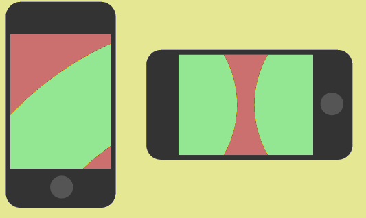
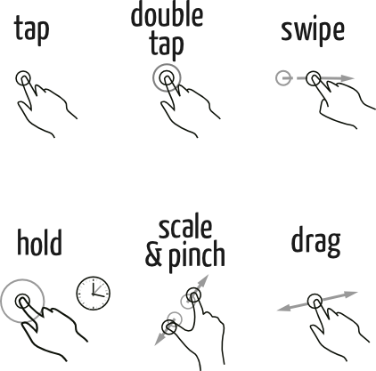

Seu navegador não suporta as funcionalidades requeridas pelo impress.js,
você terá uma apresentação com uma versão mais simples.
For the best experience please use the latest Chrome, Safari or Firefox browser.
A web deixou de ser um amontoado de páginas e passou a ser uma
plataforma com um pool de aplicações que podem ser executadas pelo
navegador. Hoje a web vai além, podendo ser aplicada à extensões de
navegadores, aplicativos mobile, e em alguns casos, softwares
Desktop.
Sheldon Led
www.sheldonled.com
Mas tem muito site sem versão mobile
E não conseguimos consumir conteúdo assim!!!
Media queries
Funcionalidade condicional do CSS
@media (min-width: 400px) {body {font-size: 125%;} }
@media (min-width: 600px) and (max-width: 790px){}
@media (max-width: 600px) and (orientation: landscape){}
View Port
<meta name="viewport" content="width=device-width, initial-scale=1.0"/>
Hot Zones

Orientação - CSS
@media (orientation: portrait) {
/* Design retrato */
}
@media (orientation: landscape) {
/* Design paisagem */
}
//Orientação - Javascript
window.onorientationchange = function() {
switch (window.orientation) {
case 0:
case 180:
// ... paisagem ...
break;
case 90:
case -90:
// ... retrato ...
break;
default:
// The Zoera never ends
}
}
Dedo é diferente de mouse
Gestos no Mobile

Esqueça o Desktop style
Esqueça alguns comportamentos do mouse
- Ação hover
- Mouse in
- Mouse out
- Mouse over
- Mouse whatever
Input de dados é difícil!
Tipos de input
- Text
- Tel
- Email
- URL
- Date
- Time
Outras dicas
- Em campos de senha, habilitar opção de mostrar senha
- Deixar áreas de texto expandíveis
- Usar GeoLocation API para preencher campo cidade/estado
- Web geral: Guardar campos já preenchidos, em caso de F5
URL's mágicas
- Email: href="mailto:sheldonled.ms@gmail.com"
- Telefone: href="tel:+556255712751"
- Maps: href="http://maps.google.com/?q=UFG"
Resumindo
- Busque implemetar soluções para performance
- Re-design para telas pequenas
- Utilize recursos para facilitar entrada de dados
- Prefira imagens vetoriais
- Use recursos do aparelho
Para onde meu código web pode ir?
- Um site responsivo comum
- Web Apps: Iphone, Windows 8
- App nativa: Firefox OS
- Extensões de navegadores
- Conversão para app: Cordova\Phonegap